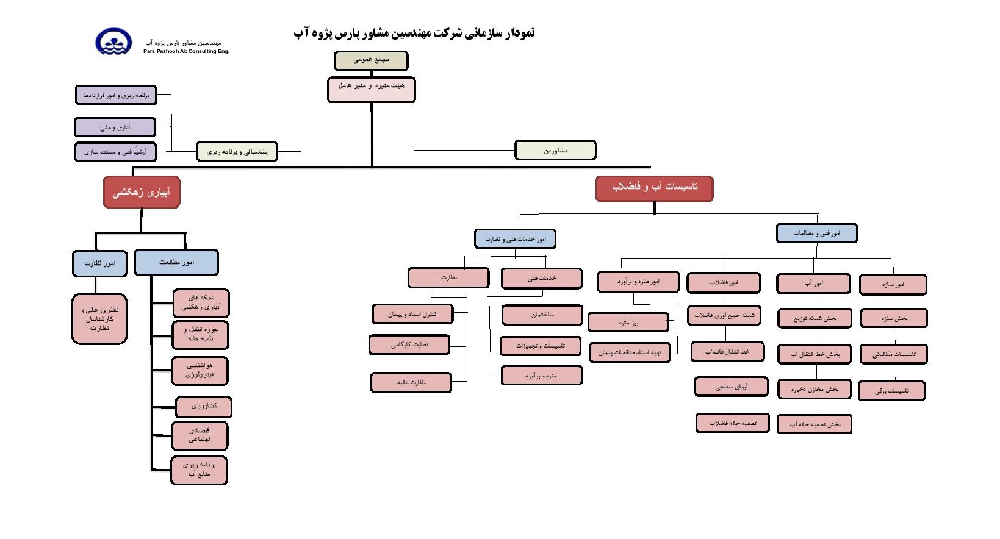
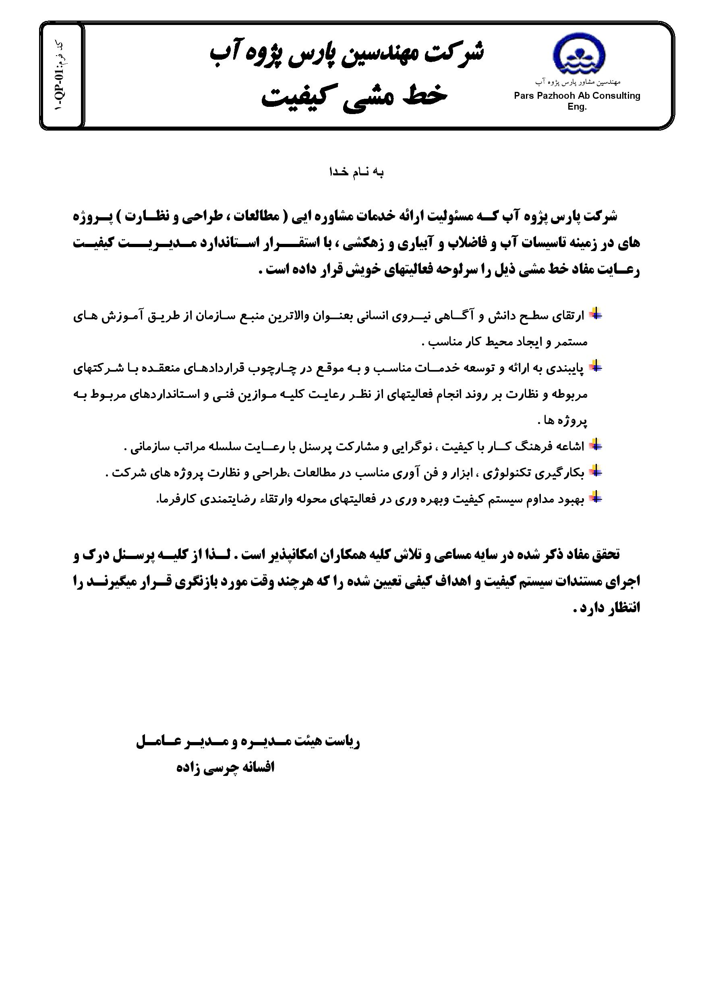
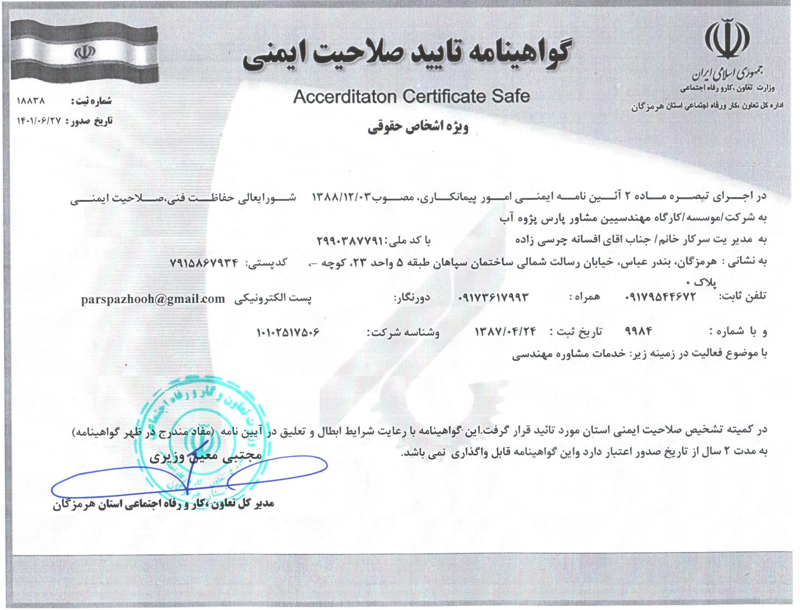
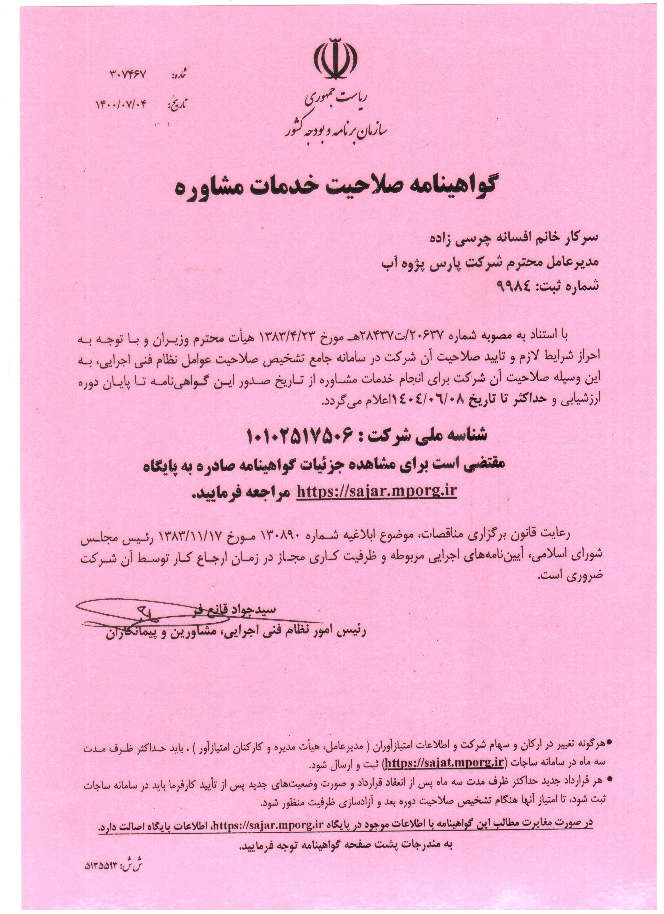
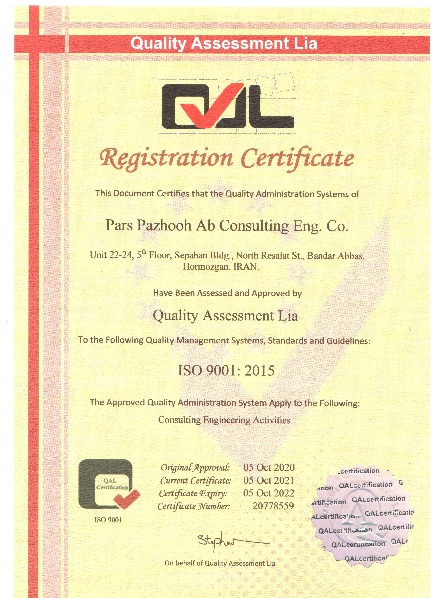
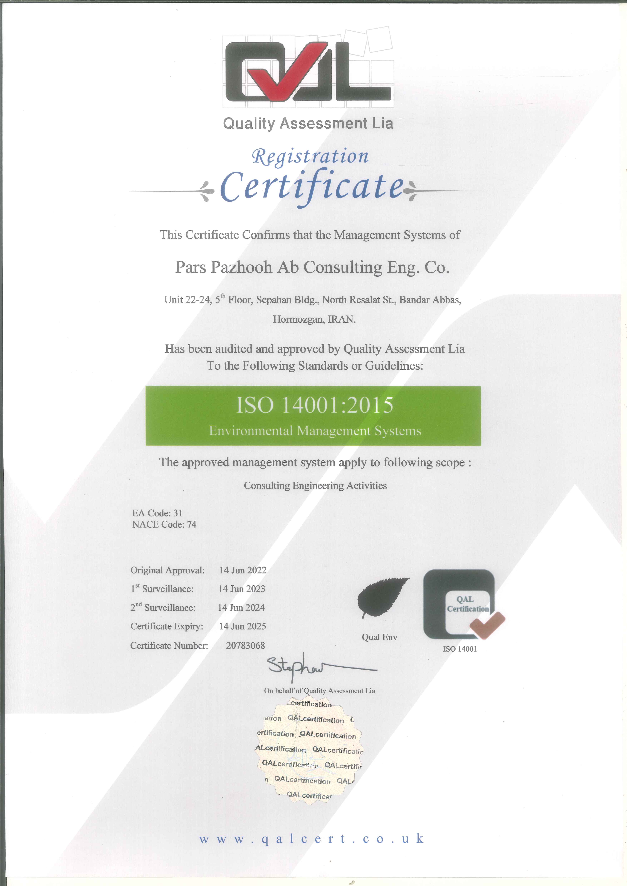
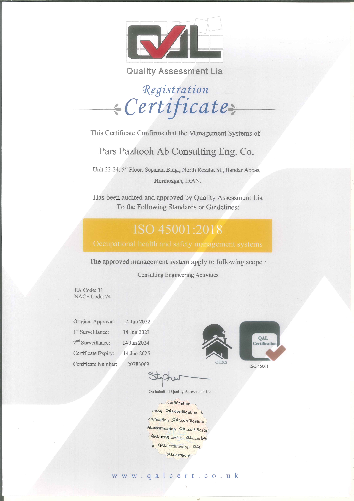

زمینه فعالیت شرکت مهندسین مشاور پارس پژوه آب
شرکت مهندسین مشاور پارس پژوه آب با بهرهگیری از نیروهای متخصص و زبده و بیش از ۱۰ سال
سابقه کار، توانایی انجام خدمات مشاورهای، مطالعات شناخت مرحله اول و دوم، نظارت کارگاهی و
عالیه و خدمات بازرسی فنی در زمینههای زیر را دارد
تاسیسات آب و فاضلاب
- خطوط انتقال، تصفیه خانه و شبکه آب روستایی و شهری
- شبکه جمع آوری، خط انتقال و تصفیه خانه فاضلاب صنعتی، روستایی و شهری
- خطوط جمع آوری و تاسیسات آبگیری
- طراحی سیستمهای نگهداری و تامیرات برنامهای و سیستم های تلهمتری و کنترل از راه دور مخازن
- تلمبه خانهها و تاسیسات تصفیه خانههای فاضلاب شهری و صنعتی و نمکزدایی و ابنیه مربوطه
- محاسبه نشت فیزیکی و نشت یابی شبکه های آب شهری
- ...انجام طرحهامطالعاتی مدیریت مصرف آب، آب بدون درآمد و
بازرسی فنی
- کنترل و تطابق کار انجام شده با مشخصات استانداردها
- بررسی و تائید کارایی پروژه
- کنترل فنی وسایل و تجهیزات و ماشین آلت در مرحله ساخت کالیبراسیون تجهیزات اندازه گیری
- کنترل کیفیت مواد و روش به کار گرفته شده در ساخت قطعه یا واحد صنعتی
- کنترل و تطابق استانداردها و مشخصات فنی تعیین شده از آغاز پروژه
- گواهی انجام کار براساس استانداردهای درخواست شده و صدور گواهی بازرسی نهایی
آبیاری و زهکشی
- مطالعات امکان سنجی
- مطالع منابع آبهای سطحی و زیرزمینی
- برنامه ریزی و اقتصاد آب
- تلفیق منابع آبهای سطحی و زیرزمینی
- مطالعه و طراحی شبکههای آبرسانی
- تاسیسات انحراف آب
- بندهای انحرافی تا ارتفاع ۵ متر
- مطالعات و طراحی شبکههای آبیاری و زهکشی اصلی و فرعی(درجه۳و۴)
- تغذیه مصنوعی
- آبیاری تحت فشار و تاسیسات وابسته
- مصارف کشاورزی






